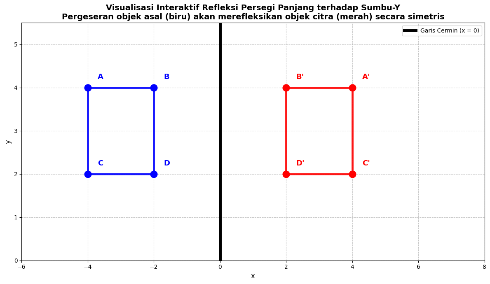

Implementasi Transformasi Linear 2026-04-12#
Visualisasi Interaktif Refleksi Vektor (2D)#
Jupyter Notebook ini mendemonstrasikan implementasi visualisasi interaktif untuk salah satu operasi transformasi linear dasar, yaitu refleksi (pencerminan) suatu objek geometri dua dimensi terhadap sumbu-y (garis cermin \(x = 0\)).
1. Landasan Teoretis Transformasi Refleksi#
Secara matematis, setiap koordinat titik dalam ruang \(\mathbb{R}^2\) dapat direpresentasikan sebagai vektor posisi (kolom):
Transformasi refleksi terhadap sumbu-\(y\) didefinisikan sebagai fungsi pemetaan linear \(T: \mathbb{R}^2 \to \mathbb{R}^2\) dengan aturan pemetaan:
Dalam representasi matriks linear, operasi pencerminan terhadap sumbu-\(y\) dinyatakan menggunakan perkalian matriks standar:
Di mana matriks transformasi standar \(A\) adalah:
Dengan demikian, citra (image) hasil transformasi untuk setiap titik diperoleh melalui operasi:
Dalam simulasi interaktif di bawah ini, empat titik sudut pembentuk bangun persegi panjang—yaitu \(A(-4, 4)\), \(B(-2, 4)\), \(C(-4, 2)\), dan \(D(-2, 2)\)—direpresentasikan sebagai vektor posisi awal. Ketika koordinat objek asal (berwarna biru) digeser secara interaktif, posisi vektor yang baru \(\mathbf{v}' = (x', y')\) akan dihitung secara langsung, dan program secara otomatis memetakan citra refleksinya \(\mathbf{v}'' = (-x', y')\) secara simetris terhadap sumbu cermin.
2. Sifat-Sifat Geometris Transformasi Linear yang Diilustrasikan#
Melalui visualisasi interaktif yang dibangun, beberapa sifat fundamental transformasi linear dapat dibuktikan secara langsung:
Preservasi Kolinearitas (Konservasi Garis Lurus): Segmen garis lurus yang menghubungkan titik-titik pembentuk objek asal tetap berbentuk segmen garis lurus setelah dikenai transformasi refleksi.
Preservasi Keparalelan (Konservasi Paralelisme): Sisi-sisi objek yang sejajar (paralel) pada persegi panjang asal tetap sejajar pada objek citra hasil pencerminan.
Preservasi Jarak (Isometri): Panjang dari setiap sisi objek tidak mengalami perubahan ukuran (panjang sisi tetap konstan).
Preservasi Sudut (Transformasi Konformal): Besar sudut-sudut interior objek dipertahankan (persegi panjang tetap tegak lurus dengan sudut \(90^\circ\)).
Pembalikan Orientasi: Arah orientasi spasial kiri-kanan mengalami pembalikan (inversi orientasi), sedangkan sumbu pencerminan (\(x = 0\)) bertindak sebagai himpunan titik tetap (invariant points).
3. Implementasi Kode Visualisasi Interaktif#
Kode di bawah menggunakan pustaka matplotlib untuk menampilkan visualisasi interaktif refleksi. Pergeseran persegi panjang biru akan memperbarui koordinat citra berwarna merah secara otomatis berdasarkan perkalian matriks refleksi.
